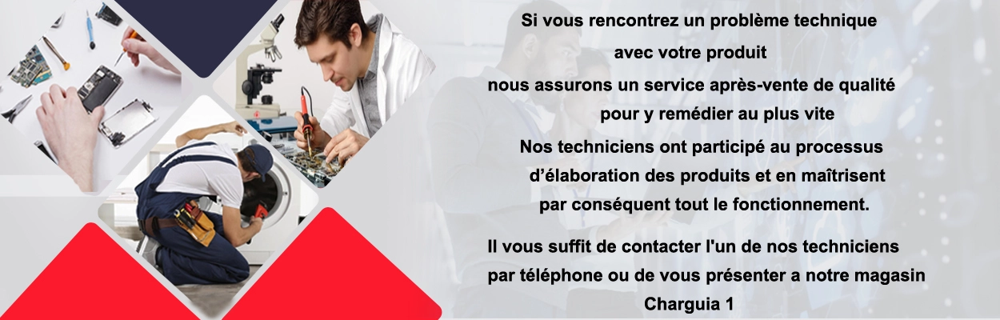

mytek

Pour mieux vous servir, Mytek met à votre Disposition Plusieurs modes de livraison:

La livraison s’effectue à l’adresse que vous avez indiquée lors de la passation de la commande. Mytek s’engage à vous livrer dans les 3 jours maximum après validation de votre commande. Les conditions, frais et délais de livraison diffèrent en fonction du mode de livraison que vous choisissez. Vous serez informé, au moment de la passation de votre commande, des modes de livraison disponibles ainsi que les délais et les tarifs applicables. Mytek se charge de l’expédition par le transporteur de son choix.
Avec le service MyTek drive vous pouvez récupérer votre commande en toute sécurité et sans contact : 1/Passez votre commande sur mytek.tn 2/Payez la commande en ligne (par carte bancaire) 3/Vous recevrez un SMS, votre commande sera prête après 5 minutes 4/Récupérez votre commande au parking de notre MegaStore Charguia I :
Les délais de livraison sont donnés à titre indicatif et informatifs ; ils dépendent notamment de la disponibilité des produits et l’adresse de livraison. Ces délais sont respectés dans 99% des cas mais peuvent être prolongés pour des imprévus. Notamment (Conditions climatiques extrêmes, grèves, jours fériés, covid19, couvre-feu...)
Le service après-vente de notre société, se charge du suivi de la marchandise après son achat par le client.
Si besoin, il assure l’entretien, la réparation ou l’échange d’un produit vendu par MyTek.
La garantie MyTek ne couvre pas toute mauvaise manipulation (trace de liquide, casses, les consommables compatibles…)
Les produits achetés sur notre site : www.mytek.tn bénéficient de la garantie constructeur indiquée sur la fiche produit
Les garanties constructeur peuvent être d’une durée et d’une étendue variable.
Cependant, selon la marque du produit, certains constructeurs ne prennent en charge que les pièces de rechange.
En cas de panne pendant la période de garantie initiale :
Le client doit se présenter à notre SAV avec la facture d’achat pour déclarer la panne et faire une demande d’intervention.
Les réparations seront assurées gratuitement par les agences techniques agrées par les constructeurs.
S'il n'est pas possible de réparer le produit dans le cadre de l'exécution de la garantie constructeur,
un échange ou un avoir tenant compte de la vétusté du produit vous sera proposé.
Pour pouvoir bénéficier de la garantie des produits, il vous est demandé de conserver la facture d'achat.
Mytek ne pourra en revanche être responsable en cas de refus du constructeur d'appliquer la garantie suite à une mauvaise manipulation
Les exclusions de garantie :
-L’intervention ou le dépannage effectué par des personnes non agrées MyTek
-Les dommages imputables à des causes d’origine externe à l’appareil garantie : vol, chute, inondation, incendie…
-Les dommages résultant d’une utilisation non conforme aux prescriptions du constructeur ou d’un défaut d’entretien ou de nettoyage.

Retours :
- Comment retourner un article ?
Vous souhaitez retourner un produit que vous venez de recevoir, plusieurs options de retours à votre disposition, veuillez contacter notre Service Clients :- En ligne :
via le formulaire de contact disponible en cliquant ici, ou : Rendez-vous sur notre site : myterk.tn Cliquez sur le bouton « Contacter nous » Remplissez le formulaire puis cliquez sur « valider »- Par téléphone :
36 010 010- Par mail :
livraison@mytek.tn Nous nous chargerons ensuite d'enclencher une procédure de réclamation auprès du transporteur.- Qu’elle est le délai de retour ?
Tous les articles vendus sur Mytek peuvent être retournés dans un délai maximum de 48h à compter de la date de livraison.- Qu’elles sont les conditions de retour d’un article ?
Tout article faisant l’objet d’un retour doit être rendu dans l’état ou il a été livré. Attention : Un article descellé n’est plus éligible au retour.- Articles non éligibles au retour :
- Les articles dont l’emballage a été endommagé - Les produits d’hygiène - Les produits de soins - Les produits cosmétiques - Les produits bébé - Les accessoires hommes et femmes - Les abonnements - Logiciel et jeux vidéo- Est-ce que le retour d’article est gratuit ou payant ?
Les retours font partie intégrante de la vente en ligne, si vous souhaitez retourner ou échanger votre commande nous sommes là pour vous aider ! Nous offrons des retours ou des échanges gratuits dans les 14 jours qui suivent votre achat. Vous pouvez retourner votre produit en échange d’un avoir, d’un produit de remplacement- Comment suivre l’état d’avancement de mon retour ?
Vous souhaitez suivre l’état d’avancement de votre demande de retour, veuillez contacter notre service clients :- Par téléphone :
36 010 010- Par mail :
livraison@mytek.tn- Qu’elle est la durée de traitement de la demande de retour ?
Chaque produit retourné sera examiné par notre service après-vente sur une durée n’excèdent pas 3 jours. A l’issue de l’examen et si votre demande et conforme à toutes les conditions de retour, vous serez remboursé.- Ma demande de retour a été refusée, pourquoi ?
Il y’a plusieurs raisons pour lesquelles le service client peut refuser votre retour : Le délai de 48h n’a pas été respecté (à compter de la date de livraison). Vous souhaitez retourner un article non éligible au retour Les dommages résultant d’une utilisation non conforme aux prescriptions du constructeur ou d’un défaut d’entretien ou de nettoyage. Les dommages imputables à des causes d’origine externe à l’appareil garantie : chute, inondation, déformation due à une chaleur excessive. Remboursement :- Qu’elle est le délai de remboursement ?
Le délai de remboursement est de 10 jours à compter de la date du résultat de l’examen effectué par notre service après-vente.